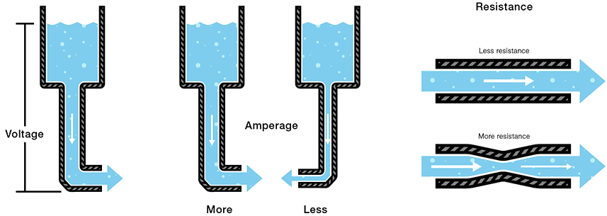

This week was all about the basic mathematics and definitions of simple ciruits.
SI Units are the most widely used units in the world which we use to quanitify the maginitude of certain measurments. Today, this system is largely synonymous for the metric unit system. A chart of SI Units can be found below.
Within the SI system, a series of prefixes are used to change the magnitude of the base unit. A chart of them can be found below.
When considering the various SI units associated with circuits, it can be helpful to think of the water analogy, where ciruits are made analogous to water flowing through a pipe. Yeah, it's exactly what it sounds like. A picture can be found below.
Voltage represents the difference in electric potential energy, representing how much the change wants to flow from one location to another.We denote it with the letter V
Amperage represents how fast the charge is flowing. We denote it by the letter A
Resistence represents how much charge is constricted and slowed down from flowing through the circuit. We denote this with the Greek letter Ω (omega)
An closed circuit is one in which the charge is allowed to freely flow from the positive side of an electrical source the the negative without being broken. An open circuit has a break. See below.
A short circuit is when there is not enough resistence in the circuit, and excess energy is converted into heat, causing the circuit to melt, explode, or fall apart in some way.
A Series Circuit or a circuit in series is one in which the resistors are placed linearly, with only one path from positive to negative. See below and compare to i. Parallel Series
A Parallel Circuits or circuits in parallel is one in which the resistors are not aligned linearly, and there are multiple paths from positive to negative. See below and compare to h. Series Circuit
A complex circuit is one in which both parallel circuits and series circuits are used together. To simplify, we often have to re-write the circuit to clear up any confusion. Do this by following the possible paths that the current can take. Then, we calculate the total resistence of the parallel circuits, and having found that, we can re-write them as circuits in series. Then all resistors in series can be added together to find the total resistence, leaving us with the most simplified form of our circuit.
My completed problem set for Week 9 can be found here.